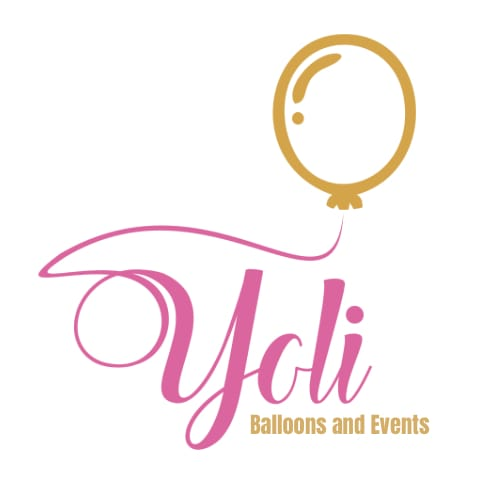
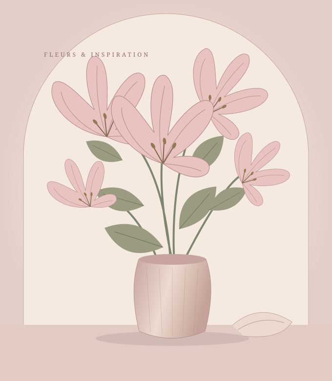

Decoración de
celebraciones
Una propuesta de decoración que parte de tu ocasión y de lo que deseas transmitir.

Consultar un eventoCELEBRACIONES CON INTENCIÓN · PANAMÁ
Decoración, flores y ambientación para acompañar tus celebraciones con una propuesta cuidada y personal.
Decoración, flores y eventos · Panamá

01 / NUESTRA PROPUESTA
Una ocasión especial empieza con una idea.
Exploremos cómo darle forma.
Una propuesta de decoración que parte de tu ocasión y de lo que deseas transmitir.
Flores para expresar una intención y acompañar los momentos que quieres compartir.
Una mirada al conjunto para dar forma al ambiente que imaginas para tu evento.
02 / PORTAFOLIO
Este espacio reunirá fotografías reales
de los trabajos de Yoli Balloons.
Selección fotográfica pendiente del cliente.
Explorar InstagramYOLI BALLOONS · PANAMÁ
Decoración de celebraciones, arreglos florales y ambientación de eventos. Comparte tu ocasión y tus referencias para conversar sobre una propuesta personal.
Cuéntanos tu idea03 / CÓMO CONSULTAR
Es el punto de partida para conocer tu celebración.
Un estilo, una paleta o una imagen que te inspire.
Conversa sobre los detalles y las posibilidades para tu evento.
ANTES DE CONVERSAR
Un punto de partida para tu consulta.
Escribe por WhatsApp al +507 6806-1384. Puedes compartir la ocasión, la fecha, la zona del evento y una idea o referencia.
Sí. Puedes incluir un enlace en el asistente de consulta o compartir tu imagen directamente en la conversación de WhatsApp.
No. La disponibilidad y los detalles de la propuesta se consultan directamente con Yoli Balloons. Abrir WhatsApp no envía el mensaje ni confirma una reserva.
Visita @yoliballoons en Instagram ↗. Esta muestra aún no contiene fotografías reales del portafolio.
CONTACTO · PANAMÁ
Comparte lo que tienes en mente.
Los detalles los conversamos por WhatsApp.
DE LA INSPIRACIÓN A TU PRÓXIMA CELEBRACIÓN
Conversemos sobre lo que tienes en mente.
Consultar mi evento Yoli Balloons · Panamá